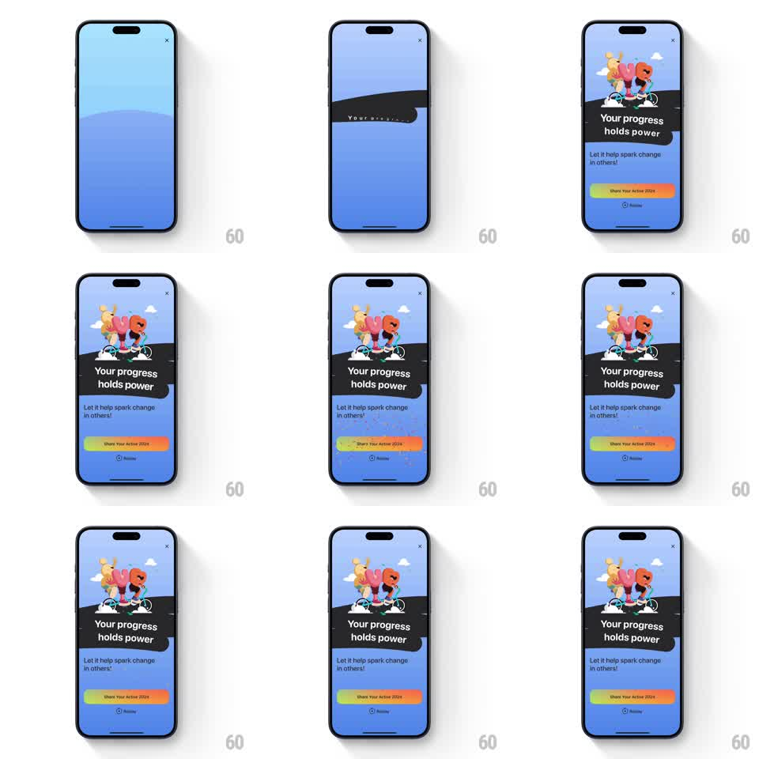

Media
Frame-by-frame

Rebuild this animation 1:1: Gentler Streak's recap outro - a wave band splits the screen, a sticker headline and the mascot illustration stagger in, confetti bursts, and a gradient share button settles at the bottom.

Rebuild this animation 1:1: Gentler Streak's recap outro - a wave band splits the screen, a sticker headline and the mascot illustration stagger in, confetti bursts, and a gradient share button settles at the bottom. ## Integration Integration: stack-agnostic spec - springs given as stiffness/damping, timed motions as duration + curve; map every value to your framework and animation library of choice. ## Scene Blue gradient sky background with a rolling dark wave band. On it: the two mascots riding bicycles with clouds, a tilted dark sticker "Your progress holds power", copy "Let it help spark change in others!", a rainbow-gradient "Share Your Active 2024" button, and a small "Review" link. ## Motion spec Pattern: staggered celebratory assembly with confetti, ~2.5s. - The sky gradient fades in (300ms) and the wave band rolls up from the bottom (400ms, ease-out). - The mascot illustration pops in above the wave (scale 0.7 to 1, spring stiffness 340 damping 14), clouds drifting in behind it. - The sticker whips in from the left at its tilt (spring stiffness 320 damping 15), then the sub-copy fades up (250ms). - Confetti bursts once from the screen's center-top: 40-60 small pieces, gravity-driven fall with flutter (2s), colors pulled from the button's gradient. - The gradient button rises and settles (spring stiffness 300 damping 18) with the Review link fading in last. ## Calibration - Confetti fires once on assembly, not on a loop - this is a finale, not a slot machine. - The button's gradient runs green-yellow-orange-pink; a flat color kills the celebration. ## Reduced motion Everything fades in; no confetti. ## Don't miss - The wave band is the ground the mascots ride on - it must arrive before they do. - The sticker tilt matches the wave's motion direction, leaning into it.